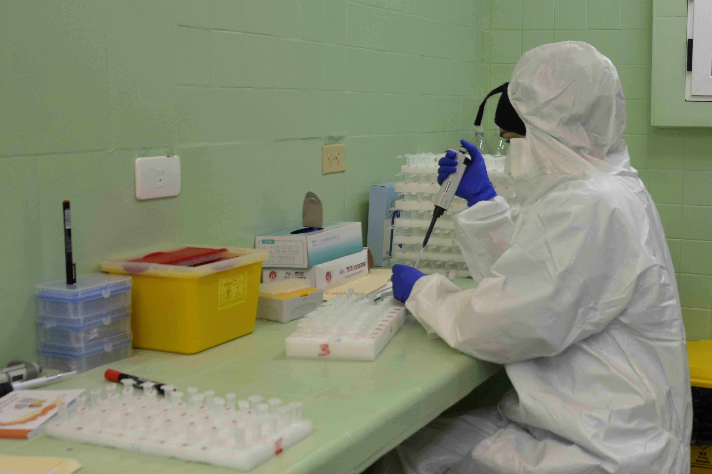

En diciembre de 2019 hubo un brote epidémico de una enfermedad de
causa desconocida en Wuhan, China. Ese fue el inicio conocido de lo
que semanas después fue declarado por la OMS como pandemia. La
enfermedad, que se nombró COVID-19 y que es ocasionada por el virus
SARS-CoV-2, ya ha afectado a más de 116 millones de personas en 255
países y territorios, provocando más de 2 millones y medio de muertes.
El 11 de marzo de 2020, cuando ya la enfermedad se había reportado en
más de cien territorios la Organización Mundial de la Salud la declaró como pandemia. Ese
mismo día, las autoridades del Ministerio de Salud Pública de Cuba
(MINSAP) dieron a conocer la presencia en territorio cubano de los
tres primeros casos positivos al SARS-CoV-2. Un año después, como el
resto del mundo, el país todavía lidia con la pandemia hasta ahora más
contundente del siglo XXI.
Evolución por países de la tasa de incidencia semanal (por millón de
habitantes)
Semana:
La experiencia de Cuba en el tratamiento de epidemias hacía que muchos
tuvieran las expectativas de conseguir una solución rápida. Sin
embargo, la Isla y sus habitantes han estado embarcados en una
intermitente travesía, plagada de alientos y desesperanzas. Un rumbo
que, con cifras e indicadores variables, ha condicionado una
evolución irregular de la mayor crisis sanitaria de la Mayor de las
Antillas y el mundo en las últimas décadas.
Así, transcurrido un año de epidemia en la mayor de las Antillas, se
han confirmado, hasta el 10 de marzo de 2021, 59157 casos de los cuales
ya son negativos a la presencia del virus 54084 y, desafortunadamente,
han fallecido 361.
No obstante, no todos los indicadores de la epidemia en Cuba han
tenido notable variabilidad. Un ejemplo de ello ha sido la paridad de
valores entre los sexos. Las cantidades de mujeres y hombres
reportados como casos confirmados en el país durante el transcurso de la pandemia han
sido muy similares.
Distribución por sexo de los casos confirmados
Otro indicador que ha tenido una cierta estabilidad en el tiempo ha
sido el relacionado con la cantidad de casos asintomáticos y de
personas que sí presentaron manifestaciones del nuevo coronavirus. El
elevado porciento de casos asintomáticos es una de las grandes
dificultades para poder contener la transmisión de esta enfermedad.
Luego de transcurridos dos meses y medio de detectados los
primeros casos, y de manera constante en el año de evolución de la
crisis sanitaria, la cantidad de individuos sin síntomas al momento de
la confirmación ha sido superior a la de aquellos que si los han
presentado.
Evolución de los pacientes sintomáticos/asintomáticos
Sin embargo, a partir del 4 de enero de 2021, cuando se alcanzó el
mayor porciento total de casos asintomáticos (65,3%), este valor se ha
ido reduciendo gradualmente. Ello ha coincidido con el periodo de
mayor incidencia de la enfermedad, lo que ha complejizado el rastreo,
detección y aislamiento de casos. Esto puede estar provocando que se
detecten menos positivos que antes en la etapa pre-sintomática de la
enfermedad.
Las fuentes de contagio en la Isla se manifestaron esencialmente de
dos formas. Por una parte, se debe hablar de quienes tuvieron la
fuente de infección en el exterior del país. Por otra, del contacto
dentro de la nación con personas ya contagiadas. Este grupo ha
aportado el mayor número de casos a lo largo de la evolución de la
pandemia en Cuba, con cifras superiores al 85% de los casos. Existe
también un número menor de enfermos a los que no se les ha
identificado el modo de contagio.
Distribución de casos importados y no importados
Los positivos con fuente de infección en el extranjero, aunque
presentan cifras inferiores a quienes contrajeron el virus dentro del
país, han tenido un gran impacto en el desarrollo de la epidemia en la
Isla.
La primera etapa de la epidemia, del 11 de marzo al 19 de julio, fue
provocada por casos provenientes del exterior. Es en este momento que
se decide cerrar las fronteras, lo que se hace efectivo el 24 de
marzo.
Con las fronteras cerradas, los importados apenas tuvieron incidencia
en la segunda ola de la enfermedad, que se ha enmarcado desde el 20 de
julio hasta el 19 de noviembre. Es en este periodo, con la apertura el
15 de noviembre de las operaciones regulares del Aeropuerto
Internacional José Martí, se abren totalmente las fronteras del país.
En la última etapa, el volumen de casos importados fue el detonante
que tiene al país en la etapa más crítica de la epidemia.
Evolución del porciento diario de casos importados y no importados
El protocolo para los viajeros fue concebido para que quienes
arribaran al país se realizaran una prueba de diagnóstico PCR a su
llegada y una segunda cinco días después. Mientras no estuviera
disponible el resultado de la segunda el viajero debía estar aislado.
El incumplimiento de las medidas de aislamiento, así como las demoras
en los resultados de las pruebas, como principales razones, hizo que,
en los primeros momentos, se generara una transmisión provocada por
estos casos provenientes del exterior.
Ello llevó a que se establecieran nuevas medidas relacionadas con la
entrada de viajeros al país. A partir del 1ro de enero se redujeron los arribos
procedentes de Estados Unidos, México, Panamá,
Bahamas, Haití y República Dominicana. Luego, el 30 de enero se volvió
a limitar el número de vuelos de estos países a los cuales se
incorporaron otros.
Asimismo, a partir del 6 de enero se estableció como requisito
obligatorio para la entrada a Cuba de todos los viajeros
internacionales, la realización de una prueba PCR con resultado
negativo a COVID-19, con 72 horas de antelación de iniciado el viaje y
por un laboratorio certificado en el país de origen. Estas medidas
provocaron una casi inmediata reducción de casos con fuente de
infección en el extranjero, sin embargo no lograron contener el
incremento de la incidencia.
Una de posibles causas es que, con el volumen de viajeros que ingresaron
al país y que, además, requerían la realización de dos pruebas PCR, la
gran mayoría de las pruebas realizadas en las semanas que siguieron a
la apertura del aeropuerto habanera, estuvieran en función del testeo
a viajeros y contactos de estos. Ello pudo provocar que no se buscara lo
suficiente en otros segmentos de la población y así se generara una
transmisión que no fue detectada con la premura necesaria.
Evolución de casos importados y casos activos desde el 15 de noviembre de 2020
Otra de las medidas tomadas en ese momento fue aumentar el ritmo de
incremento de la capacidad de Pruebas de Diagnóstico por PCR en el
país. Para ello, la estrategia fue que, eventualmente, cada provincia,
incluyendo el municipio especial Isla de la Juventud, tuviera al menos
un laboratorio propio de Biología Molecular donde poder realizar las
pruebas PCR de su territorio. De esta manera, cada territorio podría
enfrentar las dinámicas internas de la enfermedad y su contagio, las
que se han comportado de manera irregular durante el año de pandemia.
Evolución por provincias del número de casos confirmados
De esta manera, al inicio de la epidemia se trabajaba con tres
laboratorios de Biología Molecular en tres provincias y se realizaban
poco más de 100 pruebas diarias. Actualmente, se dispone de 23
laboratorios en doce provincias y se ha logrado realizar un máximo
diario de 20 mil 528 PCR. En las próximas semanas se concluirán los
laboratorios en aquellos territorios que aún no disponen de ellos, lo
cual permitirá también un mejor distribución geográfica de las pruebas
PCR que se realizan, por tanto, un mejor seguimiento de la epidemia.
Distribución por provincias de las pruebas PCR (hasta el 19/02/2021)
Este aumento de la capacidad de pruebas PCR y su regionalización
posibilitará un mejor seguimiento de uno de los indicadores más
relevantes para el seguimiento de la epidemia que es el porciento de
pruebas PCR que resultan positivas diariamente. La OMS ha establecido
el cinco por ciento como un umbral a partir del cual se puede denotar
una preocupación seria en la transmisión del virus. Sin embargo, para
que este indicador refleje sus valores con mayor certeza es necesario
que se tenga un patrón de pruebas realizadas que sea estable en el
tiempo y por regiones.
Evolución diaria del porciento de positividad de pruebas PCR
Cuba, siguiendo este indicador, tuvo una alta transmisibilidad
detectada, superior al cinco por ciento de la enfermedad, en los
primeros días de la epidemia y ya no volvió a superar ese valor hasta
enero de este año. A partir de este momento, se ha mantenido oscilando
sobre ese valor reflejando el momento complicado que vive la epidemia
en el país.

Desde antes de la detección en Cuba de los primeros casos de la
COVID-19 el Minsap implementó acciones para la prevención y
tratamiento de la enfermedad en el país. A lo largo de la pandemia,
mientras se conocía más de la enfermedad y se desarrollaron
investigaciones y estudios clínicos, estos protocolos han ido
evolucionando. Actualmente se ejecuta una sexta versión y se trabaja
en la séptima.
En el diseño y ejecución de los protocolos han influido factores de
diversa índole, desde la concepción del sistema de salud pública
cubano, el conocimiento gradual del SARS-CoV-2, el anticipo al
tratamiento con el fin de evitar la gravedad, hasta las variables
sociológicas, por mencionar algunos.
La doctora Ileana Morales Suárez, directora nacional de Ciencia e
Innovación Tecnológica del Minsap, comentó en febrero, que los
primeros protocolos, del 1 al 3, evolucionaron muy rápido y estuvieron
activos por breves períodos de tiempo. En estas etapas tomaron en
cuentas las experiencias de otras naciones para la elaboración de
dichos protocolos.
Al principio de la pandemia se atendieron diariamente en las terapias
intensivas hasta un máximo del 25% de los pacientes activos, pues
estos eran muy pocos. Luego se estabilizó en valores inferiores 7,5%.
Por su parte, a partir de la quinta versión, este indicador no ha
superado el 4,34% y la mayoría de sus valores han sido inferiores
diariamente al 1,5%.
Evolución del porciento diario pacientes en unidades de cuidados intensivos
Actualmente se implementa la sexta versión del protocolo. No obstante,
se conocen algunos detalles. Por ejemplo, la realización de tests de
antígenos para detectar positivos en momentos tempranos. En las
situaciones en que el paciente sea positivo a este examen, y en tanto
no se conozcan los resultados del PCR, se inicia el tratamiento con
Heberferon. Por otra parte, los sospechosos que presentan síntomas
reciben este tratamiento de igual modo junto a Itolizumab o Jusvinza.
Evolución de los elementos principales de los protocolos de actuación en los distintos escenarios
Seleccione el protocolo:
11
Protocolo de actuación - Versión 1
Creación nacional
Producido en el país
Producto importado
Actualización
Otros importantes cambios tienen que ver con las clasificaciones.
Actualmente se divide a los enfermos en asintomático, sintomático,
alto riesgo —que tiene mayor probabilidad de transitar a la gravedad—,
y el grave y crítico.
El protocolo hace énfasis en el tratamiento de estos últimos.
Asimismo, al paciente asintomático y sintomático leve se le ubica en
un tipo de centro, los sintomáticos moderados, los de riesgo y los
pacientes graves y críticos, en otro.
Como parte de los protocolos, la nación también utiliza los recursos
biotecnológicos para enfrentar la enfermedad. La presencia de
medicamentos creados en Cuba como los mencionados anteriormente se
dedican a garantizar los tratamientos. La Isla se encuentra en una
compleja situación económica agravada por las acciones de la
administración Trump, las que, entre otras, dificultan o impiden la
adquisición de insumos y medicinas.
En el ámbito profiláctico resaltan la Biomodulina T, el factor de
transferencia y las intervenciones con Nasalferón. Para fines
terapéuticos, se usan varias formulaciones de Interferón.
Sobre el tratamiento a graves y críticos, la Dra. C. Tania Crombet
Ramos, directora de Investigaciones Clínicas del Centro de Inmunología
Molecular, explicó que se han creado salas de vigilancia intensiva,
con el objetivo de adelantarse y anticipar qué paciente puede hacer
una evolución tórpida. A estos, se les suministra, entre otros
medicamentos, moléculas antiinflamatorias: Jusvinza e Itolizumab.
Según reporta la especialista, la primera de ella influyó en la
disminución de pacientes que pasan a graves y críticos, con una alta
tasa de recuperación. La segunda se ha consolidado en pacientes de
alto riesgo moderados y en el grave, en Cuba y en miles de enfermos en
la India.
El primer fallecimiento por causa de la COVID-19 en Cuba se informó el
18 de marzo de 2020. Uno de los turistas italianos reportados como
primeros casos positivos de la enfermedad en el país murió ese día en
el Instituto de Medicina Tropical Pedro Kourí (IPK), luego de haber
sido reportado de crítico. Desde esa fecha hasta la actualidad han
fallecido en el país 361 personas para una letalidad de 0.61% y una
mortalidad de 32.2 decesos por millón de habitantes.
Los protocolos de actuación cubanos han permitido que el país esté
entre las naciones con mejores indicadores en cuanto a letalidad y
mortalidad de la enfermedad.
Letalidad y Mortalidad por países
Asimismo, el fallecimiento de personas no ha tenido un comportamiento
uniforme durante la epidemia en el país. En el 2020, desde el 11 de
marzo hasta el 31 de diciembre, fallecieron 146 personas mientras que
en lo que ha transcurrido de 2021 han fallecido 215 personas.
Evolución por provincias del número de personas fallecidas
Sin embargo, en el 2020 hubo 12056 casos por 47101 en el 2021.
O sea, con el aumento de la incidencia ha aumentado la mortalidad,
pero ha disminuido la letalidad. Es decir, es menor la proporción de
las muertes respecto al número de casos positivos reportados en 2021
en comparación a 2020.
Evolución del número de fallecidos
El reto actual que tiene el sistema médico cubano es el disminuir al
máximo la mortalidad en un escenario de alta incidencia. Para ello se
debe trabajar en optimizar los tiempos que van desde la identificación
de los síntomas, la hospitalización del paciente, así como su
tratamiento apegado a los protocolos.
Tiempos de evolución de los pacientes sintomáticos desde el 15 de noviembre al 22 de febrero
Igualmente, es esencial la correcta identificación de las condiciones
de riesgo de cada paciente. Para ello es importante tener en cuenta
distintos elementos que van desde la edad y el sexo, hasta las
distintas comorbilidades que pueda poseer cada uno.
La edad ha sido hasta ahora el factor más determinante para determinar el riesgo de fallecimiento.
Tener más de 60 años hace a una persona más vulnerable a una persona ante esta enfermedad. Asimismo, los hombres
tienen mayor riesgo de fallecimiento que las mujeres.
Distribución por sexo y edad de los pacientes fallecidos
Por su parte, las comorbilidades que, en el último periodo de la epidemia, poseen más peligro para un paciente son, por orden,
la enfermedad pulmonar obstructiva crócnica, la enfermedad renal crónica, la obesidad, la hipertensión arterial, la cardiopatía isquémica y la diabetes mellitus.
La gran mayoría de los fallecidos ha tenido dos o más comorbilidad y casi siempre está presenta alguna de las señaladas.
Comorbilidades más comunes y su distribución por cantidad en los pacientes fallecidos
Asimismo, es relevante disminuir el número de pacientes que entran las
unidades de cuidados intensivos. Estos pacientes requieren una
atención constante y especializada y mientras mayor sea el número de
pacientes disminuyen gradualmente las condiciones de atención.
Padecer la enfermedad también acarrea al paciente varias secuelas.
Existen afectaciones de tipo renal, cardiovascular e inflamatorias
pulmonares. Además, casos críticos han tenido alteraciones de la
coagulación que pueden inducir procesos trombóticos, aunque aún no se
sabe cuanto tiempo dura ese efecto. Asimismo, la Dra. Ileana Morales,
Directora Nacional de Ciencia e Investigación Tecnológica del MINSAP,
expresó que las investigaciones revelan que las secuelas no distinguen
edad ni sexo. Hay asintomáticos que han tenido clínica negativa pero
con hallazgos importantes de lesiones pulmonares, hepáticas y renales.
Actualmente Cuba se encuentra desarrollando cinco candidatos
vacunales. Se trata de Soberana 01, Soberana 01A (Soberana Plus),
Soberana 02, Mambisa y Abdala. Las tres primeras tienen el liderazgo
del Instituto Finlay y el resto del Centro de Ingeniería Genética y
Biotecnología, aunque intervienen otras entidades.
Soberana 02 ya comenzó la tercera fase de los ensayos clínicos, con un
alcance de 44 mil diez sujetos en La Habana. Se han dispuesto 40
vacunatorios en 38 sitios clínicos de seis municipios.
Mientras, Abdala casi concluye su segunda etapa de ensayos clínicos en
Santiago de Cuba. La documentación para la fase III de sus estudios
clínicos ya fue entregada a la autoridad reguladora y aspira a
iniciarlos durante marzo de 2021 en la propia Santiago y en
Guantánamo. Por su parte, Soberana 01, que fue el candidato vacunal
que primero comenzó estudios clínicos, está pronto a realizar sus
ensayos de fase II en la central provincia de Cienfuegos.
Aunque la inmunidad de la población cubana está prevista para este año, vacunarse no significa descuidarnos.
Mucho nos queda por aprender sobre el Sars-Cov-2, así como descubrir cómo otras variantes del virus se
manifiestan o contagian. Por otra parte, quedarán normas sanitarias que formarán parte permanente de nuestras
vidas desde ahora.
Fechas que marcaron algunas cifras e hitos en el año de epidemia
Fecha
Diarios
Activos
Acumulados
Fallecidos
3 de marzo de 2020
Se reportaron los primeros casos de COVID-19 en Cuba.
Tres turistas, procedentes de Italia, que se encontraban hospedados en un hostal en la ciudad de Trinidad,
provincia Sancti Spíritus, resultaron positivos al SARS CoV-2.
18 de marzo de 2020
Primer fallecimiento de un caso confirmado de COVID-19, un paciente de nacionalidad italiana de 61 años de
edad, que
se encontraba ingresado en la sala de terapia intensiva del Instituto de Medicina Tropical “Pedro Kouri”,
en estado crítico.
23 de marzo de 2020
Primer caso recuperado de COVID-19. Se dio de alta médica del IPK al paciente de 25 años de edad,
residente en Santa Clara, provincia Villa Clara. El paciente continuó con ingreso domiciliario durante 14
días, bajo supervisión médica diaria.
3 de abril de 2020
En el inicio de la epidemia la capacidad de realizar pruebas PCR era muy limitada y, por tanto, la
búsqueda de casos no era suficiente.
Este día por primera vez la barrera de 1000 test PCR realizadas en un día, realizándose 1057 pruebas.
16 de abril de 2020
Este día, por primera vez, fallecieron cinco pacientes en una jornada. En un año de epidemia, hasta ahora,
no se ha reportado una cifra superior de decesos en un día.
24 de abril de 2020
En esta fecha se alcanzó lo que en ese momento se creía el pico de casos activos. Ese día hubo 847 casos
de COVID-19 en hospitales de todo el país.
Luego se sabría que este valor respondería a una primera ola de la infermedad y ese valor máximo sería
superado.
4 de mayo de 2020
Este día marcaría, con 74, el máximo de casos diarios en la primera ola de la enfermedad. Un evento de
transmisión en un Centro de Deambulantes de la capital fue lo que más incidió en esa cifra.
11 de mayo de 2020
El gobierno cubano desde antes de los primeros casos reportados en la Isla, comenzó a tomar medidas en
función de combatir la epidemia.
En esta fecha, según la el Índice de Rigurosidad de Oxford, Cuba implementó el conjunto más amplio y
estricto de medidas para combatir la transmisión y la enfermedad de la COVID-19.
19 de julio de 2020
Este día, por única vez en el año, no se reportaron casos de COVID-19 en el país. Sin embargo, ya esto no
ha vuelto a ocurrir.
Esta fecha marcó el fin de la primera ola de la enfermeda y, días después, se corroboraría que comenzaba
un nuevo período epidémico.
3 de septiembre de 2020
En esta segunda ola de la enfermeda en Cuba el pico de casos activos se alcanzó en esta fecha con 676
pacientes hospitalizados en el país.
Una cifra inferior al primer período que no permitía presagiar la ola de contagios que sobrevendría unos
meses después.
3 de noviembre de 2020
Los 109 casos reportados ese día marcaron una nuevo máximo de casos diarios y fue el mayor valor para este
segundo período epidémico.
19 de noviembre de 2020
Esta fecha marca el fin del segundo período epidémico. Unos días antes, el 15 de noviembre, la apertura
del Aeropuerto Internacional José Martí, y la consiguiente llegada de viajeros, sería el principal hito
que marcaría
la próxima ola de la enfermedad del país la que aún no concluye y es hasta ahora, la más compleja.
4 de enero de 2021
Desde el inicio de la transmisión en Cuba, el número de pacientes asintomáticos creció continuamente hasta
alcanzar su máximo en esa fecha, con un 65.3% de los casos hasta ese momento. A partir de ese día,
gradualmente, ese porciento ha ido disminuyendo
mostrando que se está en un momento diferente de la epidemia en el país.
8 de enero de 2021
Este día es el último de este año epidémico sin que se reportaran fallecidos. A partir de esta fecha todos
los día hemos lamentado la muerte de al menos una persona en el país.
1 de febrero de 2021
El 1ro de febrero se reportó el mayor número de casos diarios en el país con 1044. En días posteriores se
ha estado cerca de esa cifra pero no se ha superado.
En esa fecha también coincidió, luego del inicio de epidemia en el país, con el mayor valor, 5.8, de
porciento de pruebas PCR positivas en el día. Muestra inequívoca
de un escenario con una elevada transmisión del virus.
6 de febrero
Cinco días después del máximo de casos diarios, se llegó al valor máximo de casos activos durante el año
de epidemia.
Ese día se encontraban hospitalizados en el país 5799 pacientes enfoermos de COVID-19.
8 de febrero de 2021
Esa fecha marcó el mayor número de pacientes de COVID-19 que resultaron negativos a pruebas PCR. 1099
personas se sumaron
al ya gran número de convalecientes de la enfermedad. Todos los convalecientes requerirán un seguimiento
desde el sistema de salud para lograr
una recuperación plena y superar las posibles secuelas que provoca el virus en el organismo.
7 de marzo de 2021
Una de las estrategias del país en su lucha contra la enfermedad es ampliar sus capacidades de diagnóstico
y su extensión a todas las regiones del país.
Este día se superó, con 20578, el número de 20 mil pruebas PCR y es, hasta hoy, el mayor número realizado
en un día.
10 de marzo
Marca un año desde que se reportaron los primeros casos en el país, ahora en medio de una compleja
situación epidemiológica que es responsabilidad de todos
-gobierno, instituciones y población- y que todos debemos aportar para luchar por revertirla y volver, de
un modo diferente, a nuestra vida normal.
Coordinación general:
Yudivián Almeida y Ernesto Guerra